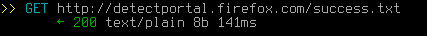
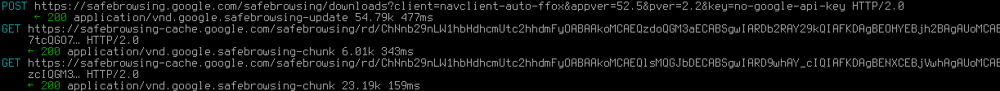
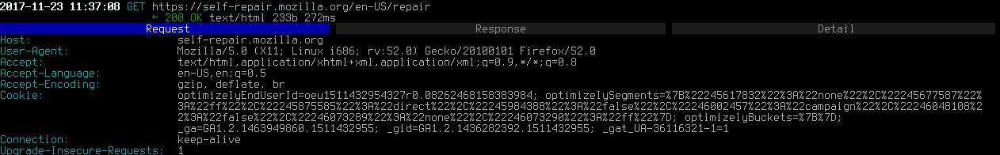
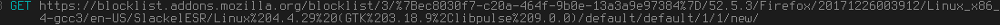

Mozilla Firefox
O Mozilla Firefox é um dos navegadores mais populares e dos mais antigos. Seus desenvolvedores ganharam a reputação de ser um "navegador baseado em privacidade e segurança, respeitando o usuário" - mas isso é justificado ou apenas marketing? De fato, ao longo dos anos, eles tomaram várias decisões contra a privacidade (e geralmente contra o usuário), mas este artigo se concentrará exclusivamente na espionagem. Versão testada: 52.5.0, com as configurações padrão. Programa usada para testas requisições: Mitmproxy.
Nível de Spyware: Alto
Depois de seguir o guia de mitigação, este software Não é Spyware.
Ele envia muitos dados diferentes com muita frequência (alguns dos quais podem identificá-lo exclusivamente). Todos os "serviços" que ele fornece, como seus mecanismos de padrão e o Pocket, são contra a privacidade. A classificação não é mais alta porque pelo menos você pode desativar ou modificar a maior parte, embora muitas vezes exija uma pesquisa profunda em about:config.
Ligando para casa
Sempre que você inicia o Firefox, ele faz esta requisição:
Na verdadem isso acontece toda vez que você acessa um site e até algumas vezes seguidas para um único site. Assim, o Firefox "liga para casa" o tempo todo, sem o seu conhecimento. Pode ser desabilitado SOMENTE em about:config. Mas, desde que você já tenha iniciado o Firefox, ele fará essa requisição pelo menos uma vez.
Conexões automáticas com alguns sites que você visitou, incluindo seus rastreadores
Os sites que você visita com mais frequência são adicionados ao painel Nova Guia. Quando você abre uma nova guia, o Firefox às vezes faz requisições para os sites, incluindo alguns de seus rastreadores. Ainda não sabemos como funciona. Às vezes, ele nem faz as requisições; outras vezes você acaba com centenas de imagens, scripts, rastreadores, etc. carregados simplesmente por que você abriu uma nova aba (sem visitar nenhum site explicitamente). NÂO fui capaz de encontrar uma maneira de desabilitar isso, mesmo em about:config.
Firefox rastreia usuários com o Google Analytics
O Firefox foi integrado à plataforma de spyware chamada "Google Analytics"[1]. O Firefox confirmou que agora envia análises para o Google. De acordo com um desenvolvedor do Firefox, o spyware no Firefox é "extremamente útil para nós e já avaliamos o custo/benefício do uso de rastreamento." e que o Firefox não removerá totalmente o suporte do Google Analytics. A posição do Firefox sobre privacidade fica muito clara com esta citação:
"Queria abordar sua posição: Não fornecemos os "dados diretamente ao Goggle". Veja na discussão aqui: https://bugzilla.mozilla.org/show_bug.cgi?id=858839. A veersão curta é: tl;dr: Agora temos a opção de não permitir que o Google faça qualquer coisa com os dados que o Google Analystics coleta nos sites da Mozilla. O rastreamento do GA é anônimo e em nível agregado e o usamos para melhorar a experiência de nossos sites. Estamos coletando dados agregados e não identificáveis em números para garantir que nossas mudanças de desenvolvimente/UX sejam bem atendidas. Podemos respeitar a privacidade e ainda ter análises; na verdade, o objetivo do Mozilla é uma experiência que valorize a privacidade e usabilidade do usuário (eu diria que a Apple também quer UX que se encaixe nesse molde, por exemplo). Precisamos de alguns dados, anonimizados e agregados, para fazer isso."
A melhor conclusão para isso é que o Mozilla quer fingir que incluir spyware em seu programa de alguma forma não é uma violação de privacidade, e que o Firefox poderia estar respeitando a privacidade do usuário ao mesmo tempo em que coleta dados sobre os usuários e os envia ao Google. É altamente recomendável ler o tópico do GitHub e as outras declarações contra a privacidade que o funcionário da Mozilla faz enquanto defende os recursos de spyware no Firefox. É muito perigoso afirmar que existe um meio-termo entre respeitar a privacidade do usuário e fazer a mineração de dados do usuário.
Navegação "Segura"?
Supostamente usado para protegê-lo de sites de "phishing", mas no final, ele faz várias solicitações ao Google a cada 30 minutos (de acordo com o Mozilla), incluindo uma requisição POST com sua versão do Firefox e um cookie oculto exclusivo e persistente. Como sempre que o URL atual corresponde a uma entrada na blacklist local em cache, uma requisição é feita aos servidores da Google, ostensivamente para testar se esse site ainda está na blacklist online principal, ele permite que o Google monitore sites específicos de forma transparente para o usuário, colocando os URLs de interesse na blacklist local, mas não na online. Pode ser desabilitado SOMENTE em about:config.
Relatório de Integridade do Firefox
De uma fonte segura: "Por exemplo, o FHR (Relatório de Integridade do Firefox) envia dados para a Mozilla sobre coisas como: sistema operacional, PC/Mac, número de processadores, versão do Firefox, número e tipo de complementos. Os dados coletados pelo FHR (Relatório de Integridade do Firefox) estão vinculados a um documento de ID que corresponde a uma instalação do navegador (explicada acima na pergunta n° 4) para que os dados possam ser correlacionados em uma janela de tempo ilimitada."[2] Além disso, de acordo com a Mozilla, novas versões do Firefox também coletarão dados de telemetria por predefinição. Pode ser desabilitado através da GUI.
Mecanismos de pesquisa contra a privacidade por padrão
Versões antigas do Firefox tinham o Google como mecanismo de busca padrão, o que é obviamente contra a privacidade. Por exemplo, de sua política de privacidade: "Quando você usa nossos serviços ou visualzia conteúdo fornecido pelo Google, coletamos e armazenamos automaticamente determinadas informações nos logs do servidor. Isso inclui: detalhes de como você usou nosso serviço, como suas consultas de pesquisa.". Depois foi o Yahoo, o que não é melhor.: "A ferramenta Yahoo Search History permite que você veja o que você pesquisou no passado.". Assim, ele salva todas as suas pesquisas. E a exclusão não faz nada: "Mesmo que você limpe suas pesquisas anteriores ou desative a ferramenta de histórico de pesquisa, o Yahoo ainda coleta e armazena dados de log do usuário de pesquisa quando você usa a tecnologia de pesquisa do Yahoo." Firefox 57 está voltando para o Google novamente. Se eles realmente se importassem com sua privacidade, o mecanismo de pesquisa padrão seria o StartPage (que fornece os mesmos resultados que o Google, mas anônimo) ou o DuckDuckGo. Pode ser alterado através da GUI.
Pocket — um pesadelo da privacidade
O Firefox tem um botão Pocket em sua barra de navegação, que permite "salvar qualquer artigo, vídeo ou página do Firefox" e "Visualizar no Pocket em qualquer dispositivo, a qualquer hora". Vamos ver como fica em termos de privacidade - citando a política de privacidade do Pocket[3]: "Além das informações que você nos fornece quando se registra em uma conta de usuário, coletamos informações sobre os URLs, títulos e conteúdo das páginas da web e outras informações que você salva no Pocket." Assim, tudo o que você coloca convenientemente no "seu" Pocket está sendo armazenado (claso, caso contrário, o Pocket não funcionaria). "Os tipos de informações que coletamos incluem o tipo de navegador, tipo de dispositivo, ID do dispositivo, fuso horário, idioma e outras informações relacionadas à maneira como você acessa as tecnologias do Pocket." Assim, sempre que você visualizar um arquivo no "seu" Pocket, eles saberão tudo sobre o dispositivo que você usou para fazer isso. "Também podemos usar "pixel tags", "web beacons", "GIFs" ou meios semelhantes (individual ou coletivamente "Pixel Tags") em conexões com e-mails que enviamos aos nossos usuários para coletar dados de uso." Então, eles estão agindo como qualquer site de rastreamento antigo, mesmo de maneiras que não têm nada a ver com sua funcionalidade. "Também podemos compartilhar o ID do seu dispositivo com terceiros em relação a campanhas publicitárias." E eles também trabalham com anunciantes! Descrever todas as violações do Pocket ocuparia este artigo inteiro. Existem serviços semelhantes com melhores políticas de privacidade, mas no final, eles ainda armazenam as coisas que você vê na "nuvem". Um navegador baseado em privacidade real não poderia ser integrado a eles por padrão. Pode ser desabilitado em about:config[8]
Atualizações automáticas
Não é tão ruim em comparação com todos os itens acima, eu acho - mas ainda instala algo sem o seu consentimento, com possíveis novos pesadelos de privacidade neles. Não há desculpa para pelo menos não ter um "Verificar atualizações, mas deixe-me escolher se quero instalá-las ou não" como padrão - isso ainda daria o benefício de segurança, mas não tiraria o controle do usuário. Pode ser desabilitado através da GUI.
Outros problemas
Às vezes, o Firefox também faz uma solicitação para "self-repair.mozilla.org" que se parece com isso:
Ele inclui "optimizelyEndUserId" o que provavelmente significa que identifica você de forma exclusiva. Pode ser desabilitado SOMENTE em about:config.[7]
Ele também faz essa requisição toda vez que você abre a página inicial padrão:

O número após a versão do Firefox é, novamente, um identificador único.[4] Pode ser desabilitado SOMENTE em about:config.
O Firefox tem um arquivo com uma lista de addons bloqueados que considera "malicioso" e faz uma requisição para atualizá-lo todos os dias (mesmo que você não tenha nenhum addon instalado).
A requisição inclui um ID de instalação do navegador de identificação única. Pode ser desabilitado SOMENTE em about:config.
O Firefox faz ligações para sua origem sobre quase todas as interações que você tem com sua Interface de Usuário
O Firefox enviará informações sobre quase todas as operações básicas que você fizer com o Mozilla. Isso é marcado com um ID de cliente exclusivo e um ID para sua sessão atual, além de qualquer informação relevante relacionada a essa ação. Por padrão, os seguintes usos da interface do usuário são relatados ao Mozilla[5]:
- Fazer uma pesquisa
- Clicar em um item principal do site
- Excluir um item do histórico
- Bloquear um site
- Marcar um link como favorito
- Remover um link como favorito
- Abrir um link em uma nova janela
- Abrir um link em uma nova janela anônima
- Abrir o painel de preferências da nova guia
- Fechar o painel de preferências da nova guia
- Solicitar uma visualização de captura de tela personalizada
- Finalizar a sessão
- Estatísticas de impressão
- Clicar/bloquear/salvar_para_pocket ping
- Falha na inicialização de um addon
- Cálculo de afinidade de domínio
Essencialmente, embora esse recurso não transmita seu histórico de pesquisa para o Mozilla, ele prova um passo a passo incrivelmente detalhado de exatamente como você usa a interface de usuário do Firefox. Isso pode ser desativado e é um recurso de spyware opcional. Você pode desativá-lo através da GUI conforme descrito aqui: Compartilhe dados com o Mozilla para ajudar a melhorar o Firefox [web.archive.org] [archive.fo] [ghostarchive.org]
Permitir rastreadores
O Mozilla tem um recurso chamado "Proteção de rastreamento aprimorada". O objetivo reivindicado desse recurso é proteger o usuário de ser rastreado. Isso seria bom se o Mozilla não colocasse na lista de permissões uma lista enorme de domínios[9].
Redução dos Spywares do Firefox
Esta revisão também é acompanhada por uma página sobre como configurar o Firefox para respeitar mais a privacidade e links para outros projetos que foram criados para resolver esse problema. Você pode ler sobre isso aqui. Estes são algumas opções em about:config mencionados anteriormentes no artigo e os valores que devem ser definidos também:
| Recurso Spyware | Opção no about:config | Valor no about:config | Fonte |
|---|---|---|---|
| Ligando para casa | network.captive-portal-service.enabled | False | Desativar captive portal [archive.li] [web.archive.org] |
| Auto-repare | browser.selfsupport.url | "" | Como posso impedir que o firefox se conecte constantemente ao self-repair.mozillia.org [archive.is] [ghostarchive.org] |
| pocket.enabled | Falso | Desabilitar Pocket no Firefox [archive.is] [ghostarchive.org] |